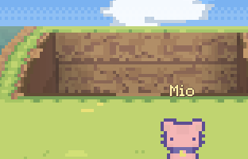
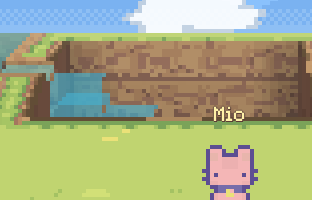
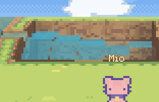

2026-11-23
Water that flows
Until now water was painted where the world generator put it and stayed there. Now it flows, a cell at a time: each cell has a level from 1 to 7, a river's face is full, water goes down first, then spreads, dries out at the edges, and can be dammed.



A pit three blocks deep beside a river. Cut the bank and the river fills it, a layer at a time.
A watering can poured on flat ground spreads too, thinner as it runs out. Old saves keep their lakes and rivers: their water became sources.
Tested on the screen, not only in the code
Two browser tests check what you actually see: a hole beside a river fills a layer at a time on the screen, and a poured can is drawn thinner at its end. One bug we only found that way: water left by one test made the next test's player swim.